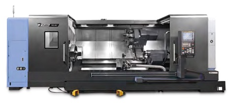

Под заказ- Патрон18–32″
- Ø обработки750–900 мм
- Длина обработкидо 5050 мм
- Мощность55 кВт
- Срок поставки под заказот 1 до 5 месяцев
12 модификаций: PUMA 600 II, 600L II, 600XL II, 700 II, 700L II, 700XL II, 800 II, 800L II, 800XL II, 600LY II, 700LY II, 800LY II
Технические характеристики
| Модель | Патрон, дюймы | Макс. диаметр обработки, мм | Макс. длина обработки, мм | Макс. скорость шпинделя, об/мин | Мощность двигателя, кВт |
|---|---|---|---|---|---|
| PUMA 600 II / M II | 18 | 900 | 1600 | 1800 | 55 / 45 / 37 |
| PUMA 600L II / LM II | 18 | 900 | 3200 | 1800 | 55 / 45 / 37 |
| PUMA 600XL II / XLM II | 18 | 900 | 5050 | 1800 | 55 / 45 / 37 |
| PUMA 700 II / M II | 24 | 900 | 1600 | 1500 | 55 / 45 / 37 |
| PUMA 700L II / LM II | 24 | 900 | 3200 | 1500 | 55 / 45 / 37 |
| PUMA 700XL II / XLM II | 24 | 900 | 5050 | 1500 | 55 / 45 / 37 |
| PUMA 800 II / M II | 32 | 900 | 1600 | 750 | 55 / 45 / 37 |
| PUMA 800B II / LB II | — | 900 | 1600 / 3200 | 500 | 55 / 45 / 37 |
| PUMA 800L II / LM II | 32 | 900 | 3200 | 750 | 55 / 45 / 37 |
| PUMA 800XL II / XLM II | 32 | 900 | 5050 | 750 | 55 / 45 / 37 |
| PUMA 600LY II / XLY II | 18 | 750 | 3250 / 5050 | 1800 | 55 / 45 / 37 |
| PUMA 700LY II / XLY II | 24 | 750 | 3250 / 5050 | 1500 | 55 / 45 / 37 |
| PUMA 800LY II / XLY II | 32 | 750 | 3250 / 5050 | 750 | 55 / 45 / 37 |
Большой токарный центр: 2-осевая и Y-образная обработка, фрезерование. L — удлинённая станина, XL — экстра-удлинённая, M — фрезерование, S — противошпиндель, Y — фрезерование по оси Y. Характеристики приведены по данным производителя; точную конфигурацию, цену и срок поставки уточняйте у менеджера.